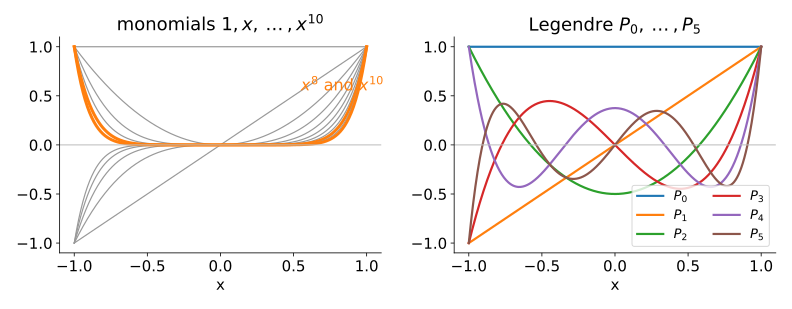

All moments determine an image. Can we get the image back from the moments up to order N?
With monomials it is a linear system, and a badly conditioned one: x^8 and x^{10} look almost the same.
Gram–Schmidt turns 1, x, x^2, \dots into orthogonal Legendre polynomials.
Legendre moments: the same information, better coordinates. Reconstruction becomes a projection, like truncating a Fourier series.
What pixels do to it: sampled polynomials are not quite orthogonal; integrate, or use discrete orthogonal polynomials.
Slides titled The math give the formulas and proofs; the ideas are complete without them.
Getting the image back
The moments are inner products: m_{pq} = \langle I, x^p y^q\rangle. Suppose we look for the polynomial \hat I = \sum_{p+q \le N} a_{pq}\, x^p y^q with the same moments as I (the best polynomial approximation, see below).
Each moment condition is one linear equation in the unknowns a_{pq}: a linear systemG\,a = m.
The matrix G holds the inner products of the basis functions with each other: the Gram matrix, G_{jk} = \langle x^j, x^k\rangle in 1D.
If the basis functions were orthogonal, G would be diagonal and each coefficient would be one division. Monomials are far from orthogonal.
Monomials look alike

On [-1, 1], x^8 and x^{10} are almost the same curve: the cosine of the angle between them (as vectors of a function space) is 0.994. Their moments carry almost the same information, and telling their contributions apart is like solving for two nearly parallel vectors.
The math: the Gram matrix and its condition
Inner product of functions on [-1, 1]: \langle g, h\rangle = \int_{-1}^{1} g(x) h(x)\,dx (a sum \sum_i g_i h_i \Delta x on a grid).
Monomials: G_{jk} = \int_{-1}^{1} x^{j+k}\,dx = \frac{2}{j+k+1} if j + k is even, else 0. On [0, 1]: \frac{1}{j+k+1}, the Hilbert matrix.
Same information as the monomial moments: P_p is a combination of 1, x, \dots, x^p, so each a_{pq} is a fixed combination of the m_{kl} with k \le p, l \le q (a triangular change of basis).
Better coordinates: each a_{pq} is just the coefficient of P_p P_q in the image. No system to solve.
The math: from geometric to Legendre moments
Write P_p(x) = \sum_{k \le p} \beta_{pk} x^k (from the recurrence). Then
The triangular matrix (\beta_{pk}) is invertible: the a_{pq} with p + q \le N and the m_{pq} with p + q \le N determine each other. What changes is only how the numbers are conditioned.
This is the orthogonal projection of I onto the polynomials of total degree \le N: the best such polynomial in the least-squares sense.
Adding an order never changes the coefficients already computed (it would with monomials: every a_{pq} of the system changes when N grows).
The same as truncating a Fourier series (the low-pass of the Fourier unit), with a different basis: the error looks different (next slide).
Try it: rebuild an image from its moments
Ringing and compression
A sharp edge cannot be a low-degree polynomial: the projection overshoots next to it (Gibbs-like ringing), as in the Fourier low-pass.
Legendre ripples follow the image border and crowd towards it (the zeros of P_n crowd towards \pm 1). Fourier ripples are evenly spaced and wrap around the border: the Fourier basis is periodic.
Moments as compression: up to N = 20 there are 231 Legendre moments; a 128 \times 128 image has 16384 pixels (1.4 %). Low orders keep the coarse shape, like the low frequencies.
Pixels: sampled polynomials are not orthogonal
On a grid of pixels the integrals become sums, and the sampled P_n are only approximately orthogonal. The error grows with the order.
Integrate per pixel: use the average of P_n over each pixel (exact for an image that is constant on each pixel).
Discrete orthogonal polynomials (Tchebichef, Krawtchouk; Mukundan 2001): polynomials of degree n that are exactly orthogonal on the points 0, 1, \dots, W-1 (Gram–Schmidt on the sampled monomials, or a discrete three-term recurrence).
In the demo, the micrograph (bright edges) at N = 40: sampled Legendre error 0.349 and rising; pixel-integrated 0.099; discrete 0.094.
The math: projection and discrete orthogonality
Best approximation. For an orthogonal basis \{b_k\} of a subspace V, \hat f = \sum_k \frac{\langle f, b_k\rangle}{\langle b_k, b_k\rangle} b_k satisfies \langle f - \hat f, b_j\rangle = 0 for every j. For any g \in V: \|f - g\|^2 = \|f - \hat f\|^2 + \|\hat f - g\|^2 \ge \|f - \hat f\|^2 (Pythagoras).
On a grid. With \langle g, h\rangle = \sum_i g(x_i)h(x_i)\Delta x the sampled Legendre polynomials have \langle P_m, P_n\rangle \ne 0 for m \ne n (the midpoint rule is not exact for polynomials of degree m + n \ge 2). Discrete orthogonal polynomials T_n satisfy \sum_i T_m(x_i)T_n(x_i) = \delta_{mn} exactly; projection with them is the exact least-squares fit on the grid, which the monomial Gram system also computes, if the arithmetic were exact.
Summary
Reconstructing from monomial moments is a linear system with the Gram matrix; monomials are nearly parallel, the system is ill-conditioned (\kappa \approx 10^7 at degree 10 on [-1, 1], 10^{14} on [0, 1]).
Legendre moments carry the same information as m_{pq}; reconstruction is an orthogonal projection: best in least squares, earlier coefficients never change.
Ringing at edges as in Fourier, with a different pattern; on pixels, integrate or use discrete orthogonal polynomials.